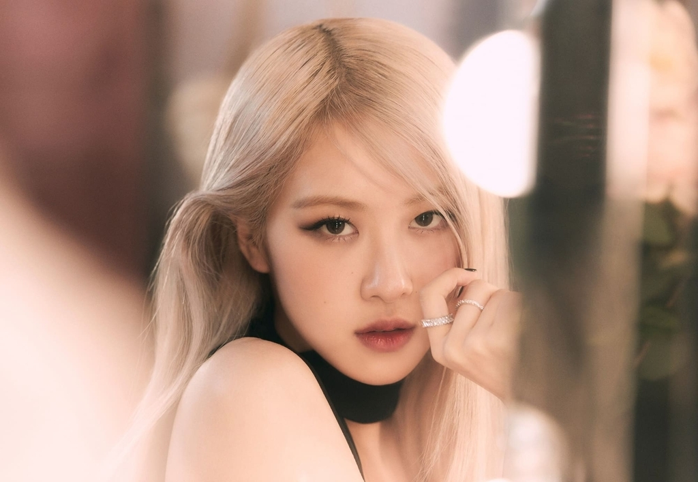

Roseanne Park (Rosé)

Roseanne Park, Park Chaeyoung (Korean)
Stage Name: Rosé (로제)
Birth Name: Park Chae Young (박채영)
English Name: Roseanne Park
Nicknames: Rose, Rosie, “Pasta”
Position: Main Vocalist, Lead Dancer
Birthday: February 11, 1997
Zodiac Sign: Aquarius
Birthplace: Auckland, New Zealand
Height: 168.7 cm (5’6”)
Weight: 44 kg (97 lbs)
Blood Type: B
MBTI Type: ENFP
Instagram: @roses_are_rosie
Weibo: roses_are_rosie
TikTok: @roses_are_rosie
Youtube: ROSÉ
"Best when it's the four of us"
- Rosé
Check out Rosé solo! Rosé - Gone